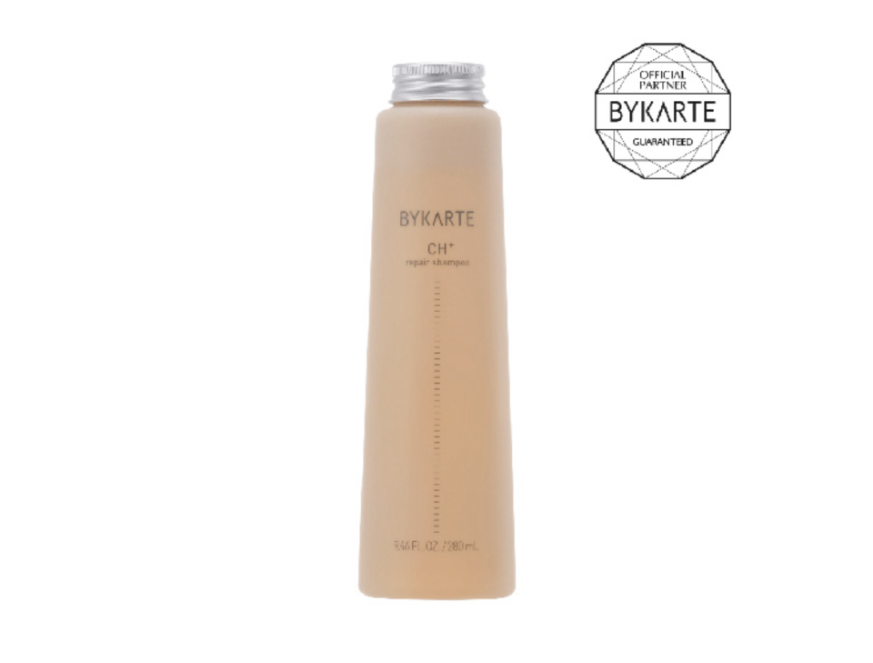
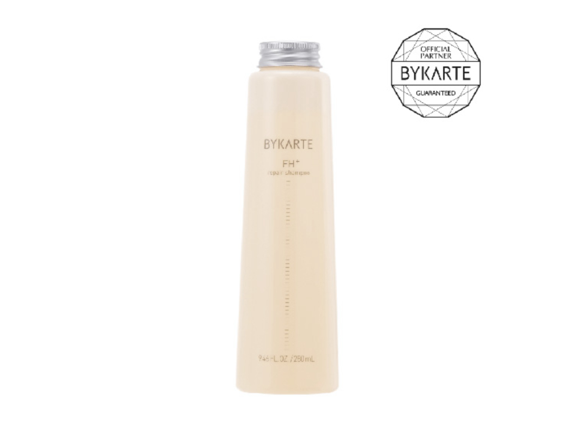
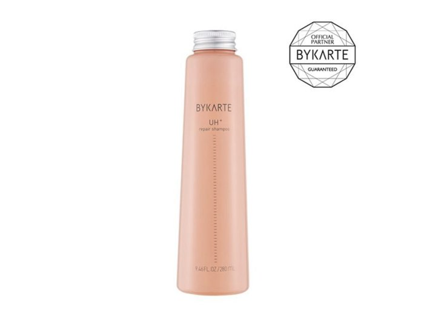

Buy Only ・ Walk-in Welcome
バイカルテ
福岡で"買うだけ"OK
施術もご予約もいりません
SEAM FUKUOKAは バイカルテをメーカー公認の正規ルートで取り扱うヘアケアショップ
お買い物だけのご来店を歓迎しています
店舗のご案内
福岡での立ち寄り方
大名は 天神に隣接する福岡の流行発信地です。路面のセレクトショップやカフェが集まり 買い物の合間に立ち寄りやすいエリアです。
SEAMは西鉄天神駅から徒歩5分。天神の百貨店エリアからも歩ける大名の一角にあります。
アウトバスやスタイリングなど 気になっていたアイテムを実際に試しながら選べます。予約不要 お買い物だけのご来店も歓迎です。
この店舗で出会える バイカルテ
取扱アイテムと ひとこと詳細

バイカルテ リペアシャンプー CH+
280ml ・ 定価 ¥4,180 税込
シスチンで補修しながら洗う、硬毛のためのカルテ。ごわつく髪が、泡の中でやわらかい返事をし始める。

バイカルテ リペアシャンプー FH+
280ml ・ 定価 ¥4,180 税込
細く柔らかい髪専用の補修泡。しなやかさを守りながら洗えるから、ぺたんとせずに立ち上がる。

バイカルテ リペアシャンプー UH+
280ml ・ 定価 ¥4,180 税込
2024年の新テクノロジーを積んだ、うねり髪のための一本。洗いから始めるくせ対策の最前線。
価格・仕様は変わる場合があります このほかのバイカルテも店頭に揃っています
買い方は 2とおり
In Store
SEAM FUKUOKAの店頭で選ぶ →
どなたでも購入OK ・ 予約不要 ・ バイカルテを実際に手に取れます
Members Only
会員制オンラインショップ →
サロン専売品を会員価格で ・ ご登録は店頭のみ
販売のみ・ネットショップでのご購入について
バイカルテは美容室専売品（サロン専売品）です SEAMは正規取扱店として販売のみのご来店を歓迎しています 施術も予約も要りません
店頭でご登録いただくと 買い足しは会員制のネットショップから通販でご注文いただけます
よくある質問
- 福岡でバイカルテを買うだけの来店はできますか
- はい SEAM FUKUOKAでは施術やご予約がなくても バイカルテをお買い求めいただけます お買い物だけのご来店を歓迎しています
- 福岡店へのアクセスは
- 西鉄天神駅から徒歩5分（大名）です
- 予約は必要ですか
- 不要です 西鉄天神駅から徒歩5分（大名） 営業時間内にそのままお越しください
- 会員でなくても買えますか
- 店頭はどなたでもご購入いただけます 会員制はオンラインショップのみで ご登録は店頭でご案内しています
- バイカルテの在庫はありますか
- 在庫は時期により変わります 確実にお求めの場合は SEAM FUKUOKAのInstagramや店頭でご確認ください